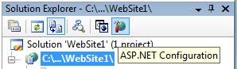

MySQL Connector/Net provides support for the ASP.NET 2.0 provider model. This model allows application developers to focus on the business logic of there application instead of having to recreate such boilerplate items as membership and roles support. Currently, only membership and role providers are supplied although session state and profile providers will be provided in upcoming releases.
Installing The Providers
The installation of Connector/Net 5.1 or later will install the providers and register them in your machines .NET configuration file. The providers are implemented in the file mysql.web.dll and this file can be found in your Connector/Net installation folder. There is no need to run any type of SQL script to setup the database as the providers create and maintain the proper schema automatically.
Using The Providers
The easiest way to start using the providers is to use the ASP.NET configuration tool that is available on the Solution Explorer toolbar when you have a website project loaded.
In the web pages that open you will be able to select the MySQL membership and roles provider by indicating that you want to pick a custom provider for each area.
When the provider is installed, it creates a dummy connection string named LocalMySqlServer. This has to be done so that the provider will work in the ASP.NET configuration tool. However, you will want to override this connection string in your web.config file. You do this by first removing the dummy connection string and then adding in the proper one. Here is an example:
<connectionStrings>
<remove name="LocalMySqlServer"/>
<add name="LocalMySqlServer" connectionString="server=xxx;uid=xxx;pwd=xxx"/>
</connectionStrings>
Distribution
To use the providers on a production server you will need to distribute the MySql.Data and the MySql.Web assemblies and either register them in the remote systems Global Assembly Cache or keep them in your applications bin folder.